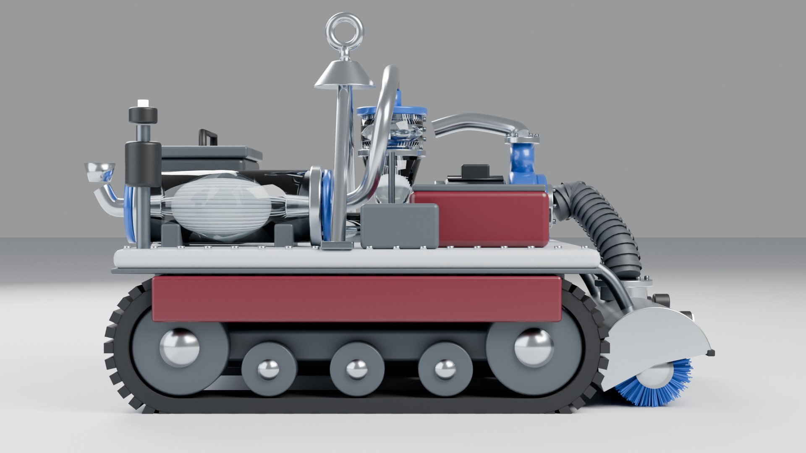
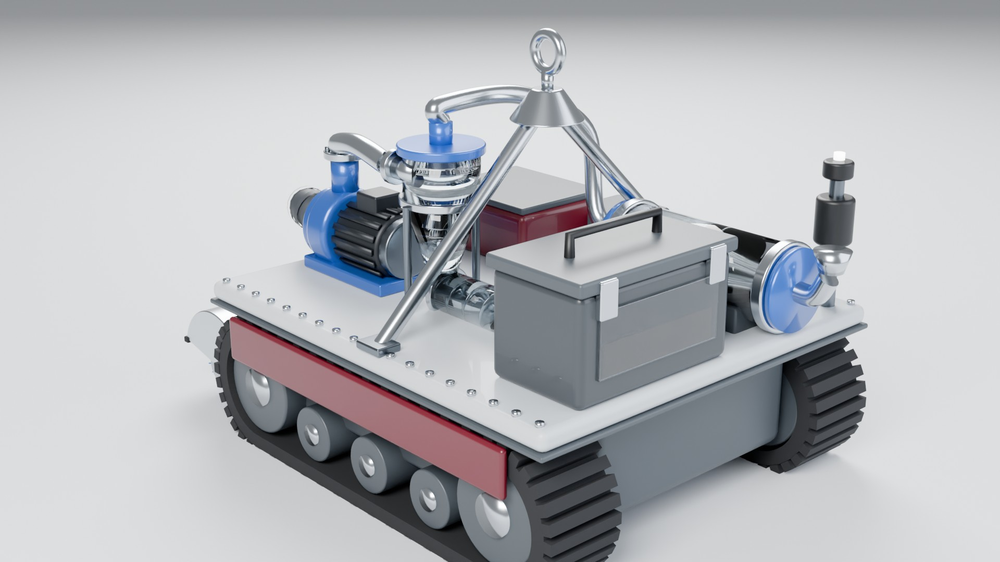
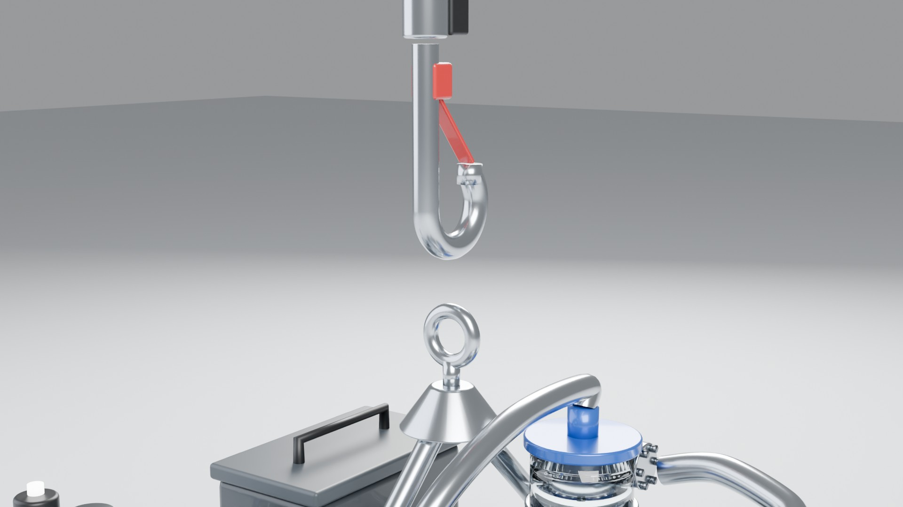
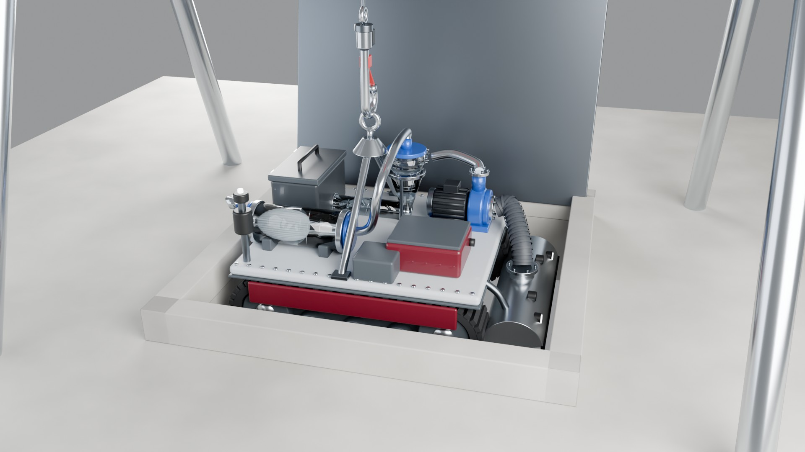

TutorBin

3D robot model · review 1
Concept C1
Tracked Brush–
Hydrocyclone Crawler
Built in 3D from your selected concept, the slide 10–13 reference pictures and your layout (slide 48). This is the model we will animate. Please review it before we build the full video.
Renders are stills from the real 3D scene (Blender, path-traced). Concept design, not final production CAD.
TutorBin
All sidesSide, rear and top views

Side · suction hood at the front (right), two tracks

Rear · sealed debris cartridge, polishing-filter return, sensor mast
Look
Silver half-round suction hoodDense blue roller brushGrey deck, maroon track guards and battery housingBlue vortex pump, black finned motorClear hydrocyclone, filter and conveyor bodies with steel flangesDark sealed cartridge with sediment windowBlack sonar and sensor pods, front lights
Proportions follow the preliminary envelope so the robot passes the 1 m × 1 m hatch with clearance. No dimensions will be shown in the video, as you asked.
TutorBin
Cleaning headSuction hood and soft rotating brush
The roller brush spans the full hood width and sits right behind the hood lip, so loosened sediment is drawn straight up the outlet into the suction hose.
In the animation (scenes 06–07) the hood turns semi-transparent so the brush, the slurry flow and the onboard path can be followed:
brush + suction hood → vortex pump → hydrocyclone → screw conveyor → sealed cartridge
hydrocyclone overflow → polishing filter → back to the reservoir
On-screen wording will be “the suction system minimizes sediment dispersion”.
TutorBin
Deployment and recoveryHook, guided docking eye and the 1 m hatch

Quick-release hook approaching the guided docking eye

Passing the 1 m × 1 m hatch on the winch
Matches your slide-13 sequence: a
silver hook with a red safety latch on a swivel, and on the robot an
eye bolt above a bell-shaped guide on an A-frame over the centre of the robot. The guide steers the hook into the eye for the self-guided re-latch.
Hook release and reconnection are labelled “proposed” in the video. The robot is sized so it clears the hatch opening with room for the lifting gear.
TutorBin
Look test · underwater
On the reservoir floor
Fully submerged among the columns, light falling from above, sediment on the floor ahead. Lighting, water colour and floor detail will be refined for the final scenes.